Time series analysis is concerned with data that is associated with their dates, such as stock prices.
Get and change the data into correct format:
data(AirPassengers) #Get airpassangers data
head(AirPassengers)## [1] 112 118 132 129 121 135#install.packages("tseries")
require(tseries)First we need to determine the characteristics of the data so we can transform and model it appropriately. After transformation (if necessary), we move to decomposing the data. Finally, we model those components.
plot(AirPassengers)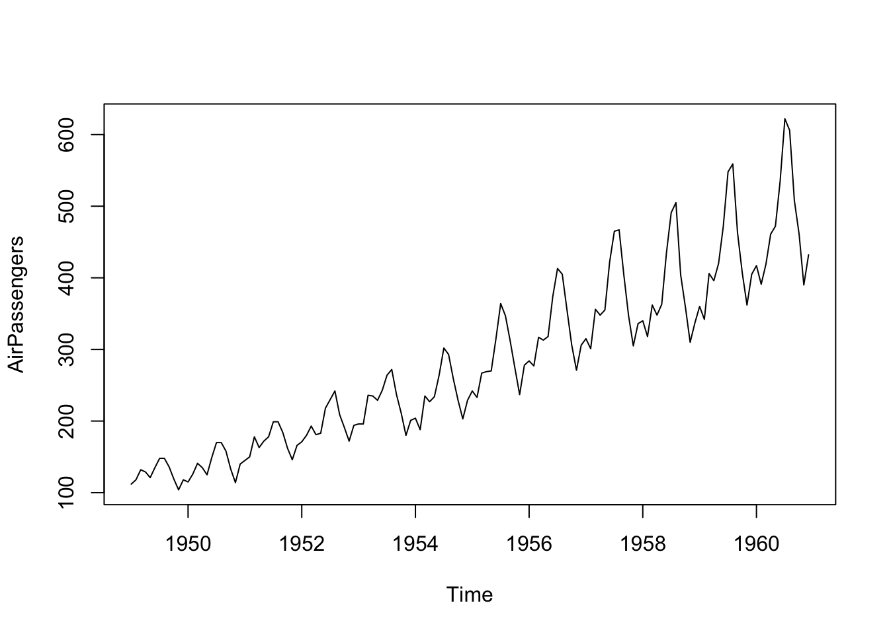
As you can see, variance increases with time. This means that data is not stationary.
Let’s perform adf.test to confirm non-stationarity.
kpss.test(AirPassengers, null = "Level") #Check for level stationarity##
## KPSS Test for Level Stationarity
##
## data: AirPassengers
## KPSS Level = 2.7395, Truncation lag parameter = 4, p-value = 0.01kpss.test(AirPassengers, null = "Trend") #Check for trend stationairty##
## KPSS Test for Trend Stationarity
##
## data: AirPassengers
## KPSS Trend = 0.09615, Truncation lag parameter = 4, p-value = 0.1adf.test(AirPassengers, alternative = "stationary", k = 12)##
## Augmented Dickey-Fuller Test
##
## data: AirPassengers
## Dickey-Fuller = -1.5094, Lag order = 12, p-value = 0.7807
## alternative hypothesis: stationaryAccording to kpss.test, the data is not level stationary however it seems to be trend stationary. kpss.test looks for changes in mean throughout the time series, “trend stationary” means, there is a linear trend in the data and when this is subtracted from the time series, the mean is stationary.
In case of a unit root, both the mean and the variance change with time. In this case, our data has non stationary variance and non stationary mean. So the data is non stationary.
To solve the non-stationarity in variance, we can log transform the data and to solve the non-stationarity in mean, we can use differencing.
AirPas.log <- log(AirPassengers)
AirPas.logdif <- diff(AirPas.log, lag=1, differences = 1)
par(mfrow= c(1,2))
plot(AirPas.log)
plot(AirPas.logdif)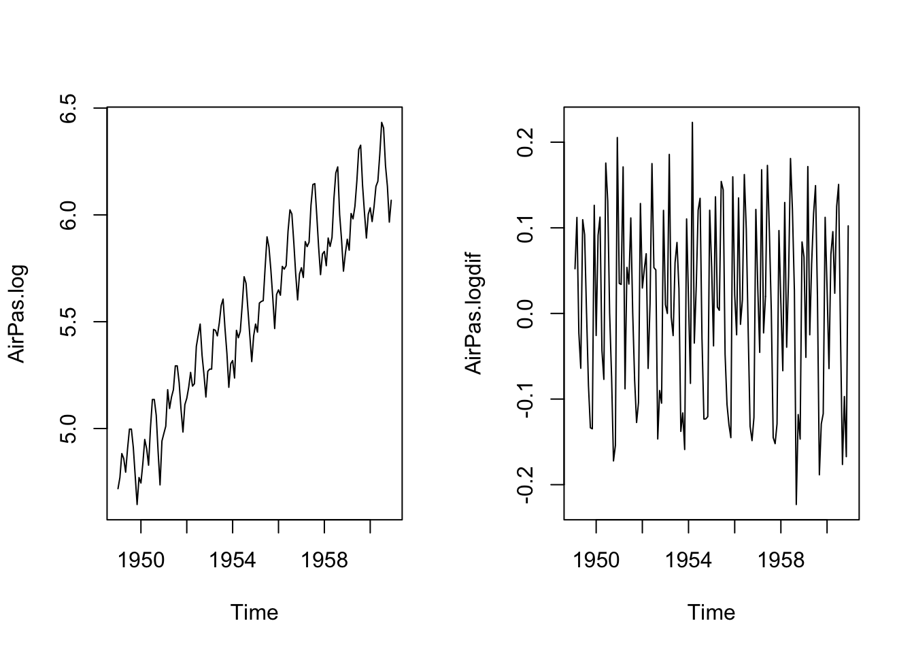
After logging, the variance seems stationary through all seasonal effects. After differencing, mean seems stationary. Some datasets may need higher order differencing to achieve mean stationarity.
Let’s take a look at ACF and PACF.
par(mfrow=c(1,2))
acf(AirPas.logdif, lag.max = 36)
pacf(AirPas.logdif, lag.max = 36)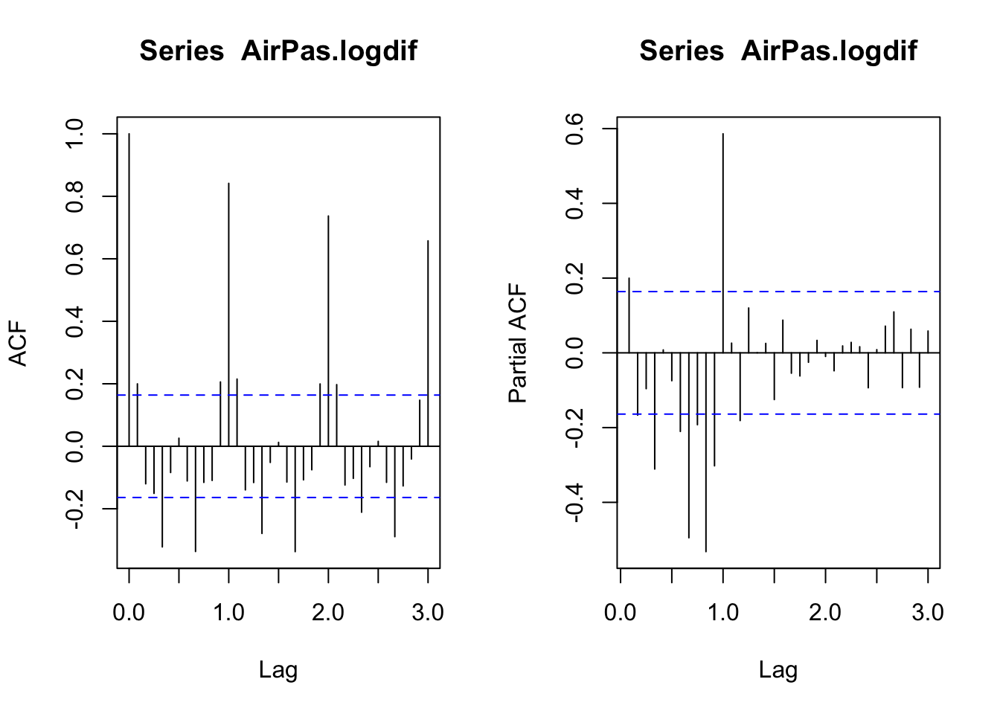
Based on the ACF plot, the existence of seasonality is evident. The seasonal lag seems to be 12 months. We could decompose the data to see the seasonal effects.
decomp <- decompose(AirPas.logdif) #Find seasonal and trend compositions of the data
par(mfrow=c(1,1))
plot(decomp)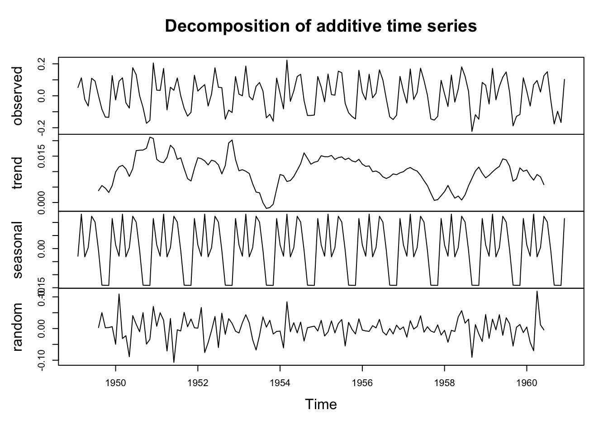
There are clearly some seasonal components in the data. We should adjust for seasonality.
data <- AirPas.logdif - decomp$seasonal #Remove seasonal effect
t <- time(data)
fit <- lm(data~t) #Fit linear regression to the mean
plot(data, type = "l")
abline(fit) #Plot linear regression line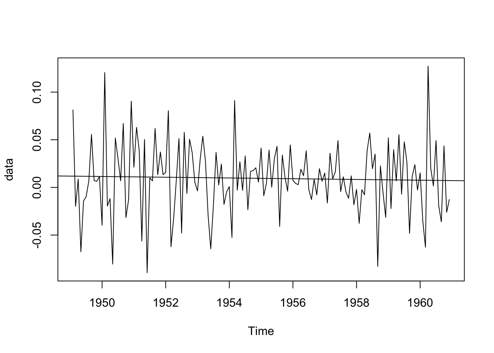
Let’s check for stationarity:
kpss.test(data, null = "Level") #Check for level stationarity##
## KPSS Test for Level Stationarity
##
## data: data
## KPSS Level = 0.065265, Truncation lag parameter = 4, p-value = 0.1kpss.test(data, null = "Trend") #Check for trend stationairty##
## KPSS Test for Trend Stationarity
##
## data: data
## KPSS Trend = 0.025627, Truncation lag parameter = 4, p-value = 0.1adf.test(data, alternative = "stationary", k = 11)##
## Augmented Dickey-Fuller Test
##
## data: data
## Dickey-Fuller = -4.6977, Lag order = 11, p-value = 0.01
## alternative hypothesis: stationaryAs you can see, we have a stationary time-series after solving the non-stationary mean, non-stationary variance and seasonality problems. Now we should take a look at the ACF and PACF once again.
par(mfrow=c(1,2))
acf(data, lag.max = 36)
pacf(data, lag.max = 36)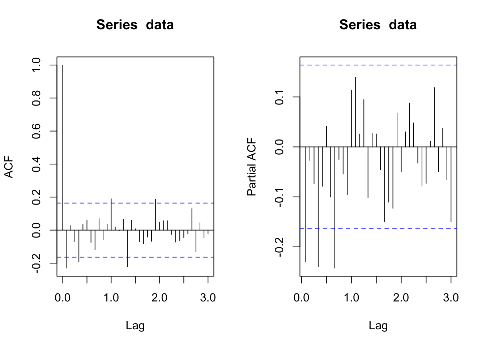
There are still some long lag time dependencies in the data but there is no clear seasonality, we could assume that those high values could be due to shocks or random effects. Since we cannot determine if it’s either an AR or a MA process, we should try out different models. Most likely it is an ARMA or an ARIMA process. Let’s recap what we found so far: * Data is non-stationary due to changing mean and variance. We solved this by log-transforming and differencing. Difference order was 1. * Model has a seasonal component with a period of 12.
We will use the log-transformed data to model the time series. We will specify the differencing order in the model. As mentioned before, we should use different models.
Initially I will use an AR(1)-SAR(1) model.
model <- arima(AirPas.log, order = c(1,1,0), seasonal=list(order = c(1,0,0), period = frequency(AirPas.log)))
model##
## Call:
## arima(x = AirPas.log, order = c(1, 1, 0), seasonal = list(order = c(1, 0, 0),
## period = frequency(AirPas.log)))
##
## Coefficients:
## ar1 sar1
## -0.2905 0.9287
## s.e. 0.0822 0.0229
##
## sigma^2 estimated as 0.001777: log likelihood = 237.94, aic = -469.89par(mfrow=c(1,1))
plot(model$resid, type = "p") #Residual plot
abline(0,0)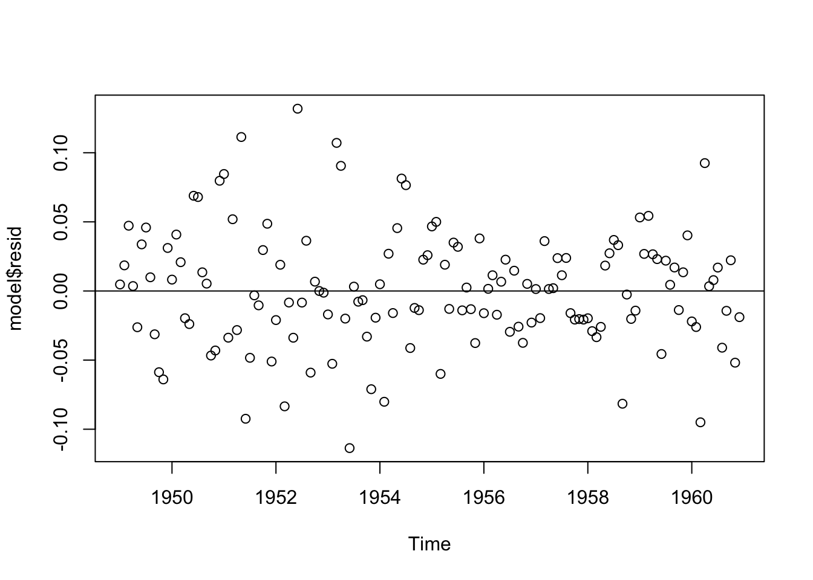
When we look at the residuals, we see that residuals have decreasing variance. This means that the residuals are not independent. Model is not appropriate. Normally we want residuals to randomly distributed above and below the (0,0) line. We can use Ljung-Box test to confirm dependency.
Box.test(model$residuals, lag = 12, type = "Ljung-Box", fitdf = 1)##
## Box-Ljung test
##
## data: model$residuals
## X-squared = 23.178, df = 11, p-value = 0.01668Null hypothesis of the Ljung-Box test is independence in the time series. In this case, we reject the null-hypothesis, our residuals are not independent. Let’s fit an ARMA(1,1)-SAR(1) model.
model2 <- arima(AirPas.log, order = c(1,1,1), seasonal=list(order = c(1,0,0), period = frequency(AirPas.log)))
model2##
## Call:
## arima(x = AirPas.log, order = c(1, 1, 1), seasonal = list(order = c(1, 0, 0),
## period = frequency(AirPas.log)))
##
## Coefficients:
## ar1 ma1 sar1
## 0.4369 -0.7264 0.9204
## s.e. 0.3553 0.2847 0.0295
##
## sigma^2 estimated as 0.001768: log likelihood = 238.9, aic = -469.79plot(model2$resid, type = "p") #Residual plot
abline(0,0)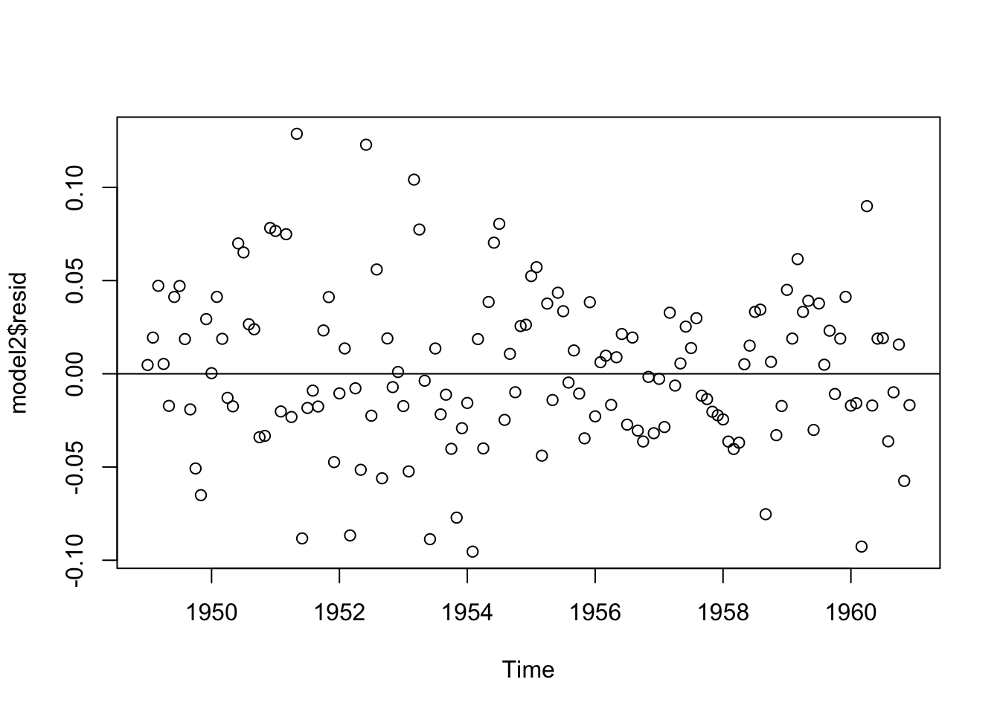
Box.test(model2$residuals, lag = 12, type = "Ljung-Box", fitdf = 1)##
## Box-Ljung test
##
## data: model2$residuals
## X-squared = 20.784, df = 11, p-value = 0.03568In this case, our p-value increased, but the residuals are still dependent. Let’s fit another model, this time let’s fit a MA(1)-SAR(1) model.
model3 <- arima(AirPas.log, order = c(0,1,1), seasonal=list(order = c(1,0,0), period = frequency(AirPas.log)))
model3##
## Call:
## arima(x = AirPas.log, order = c(0, 1, 1), seasonal = list(order = c(1, 0, 0),
## period = frequency(AirPas.log)))
##
## Coefficients:
## ma1 sar1
## -0.3259 0.9304
## s.e. 0.0924 0.0226
##
## sigma^2 estimated as 0.001767: log likelihood = 238.2, aic = -470.39plot(model3$resid, type = "p") #Residual plot
abline(0,0)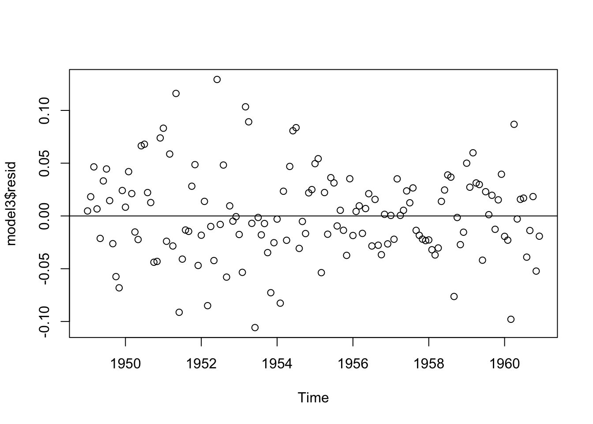
Box.test(model3$residuals, lag = 12, type = "Ljung-Box", fitdf = 1)##
## Box-Ljung test
##
## data: model3$residuals
## X-squared = 22.626, df = 11, p-value = 0.01995Our p-value decreased again. Instead of trying out a bunch of different models, we can use auto.arima to automatically fit the model.
#install.packages("forecast")
require(forecast)
model4 <- auto.arima(AirPas.log)
model4## Series: AirPas.log
## ARIMA(0,1,1)(0,1,1)[12]
##
## Coefficients:
## ma1 sma1
## -0.4018 -0.5569
## s.e. 0.0896 0.0731
##
## sigma^2 estimated as 0.001371: log likelihood=244.7
## AIC=-483.4 AICc=-483.21 BIC=-474.77plot(model4$resid, type = "p") #Residual plot
abline(0,0)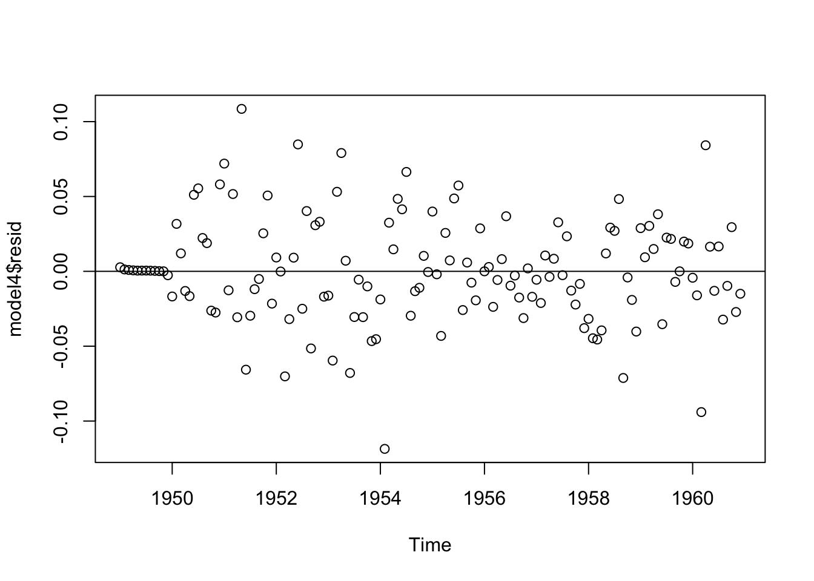
Box.test(model4$residuals, lag = 12, type = "Ljung-Box", fitdf = 1)##
## Box-Ljung test
##
## data: model4$residuals
## X-squared = 9.2333, df = 11, p-value = 0.6004auto.arima function fitted an ARIMA(0,1,1)-SARIMA(2,1,2) model to our data. The data had strong seasonal effect. When model selection is performed, we would like the model with the smallest AIC/BIC. Auto-fitted model has the minimum AIC of all presented models. Our residuals are now independent. Let’s look at the ACF and PACF of the residuals to confirm.
par(mfrow=c(1,2))
acf(model4$resid)
pacf(model4$resid)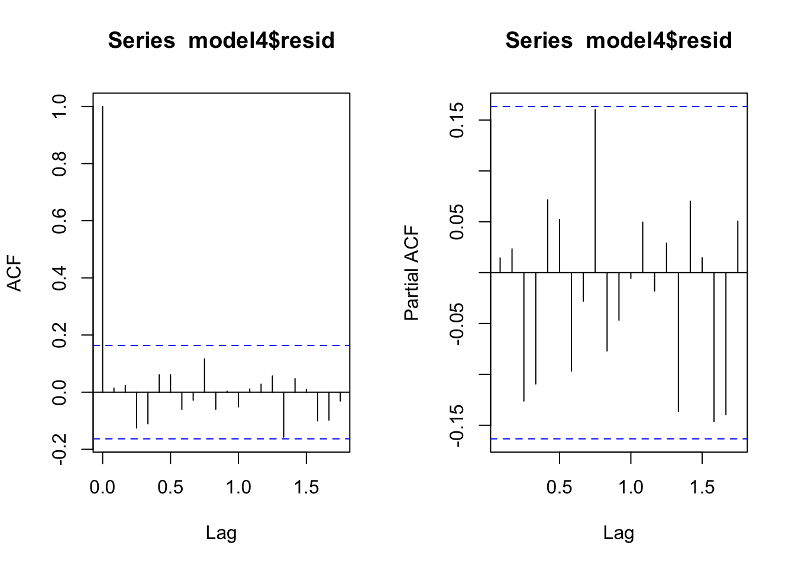
No dependencies left in the residuals. Model is appropriate.
We can forecast using the forecast function in the forecast package.
future <- forecast(model4, 12) #Forecast next 12 observations
plot(future)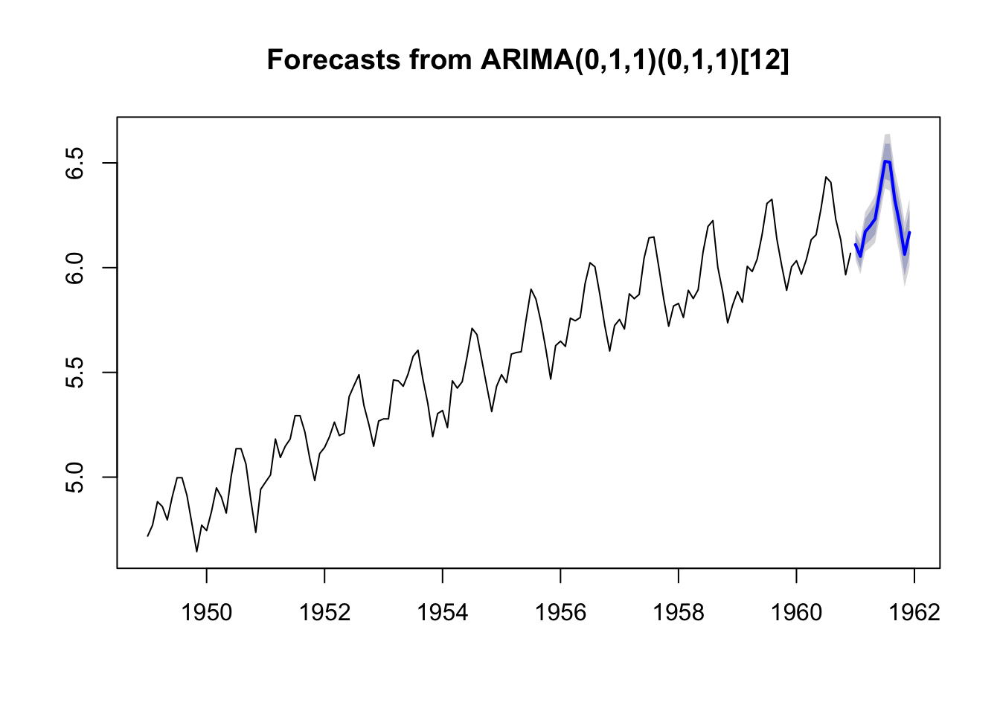
Remember that we took the log transform of our data, so for proper forecasting we need to exponentiate to obtain the real time series and forecasted values.
future.original <- future #Make a copy of the forecasted values
future.original$x <- exp(future.original$x) #Exponentiate the original time series
future.original$mean <- exp(future.original$mean) #Exponentiate the forecasted values
future.original$lower <- exp(future.original$lower) #Exponentiate lower confidence intervals (80% and 95% confidence)
future.original$upper <- exp(future.original$upper) #Exponentiate upper confidence intervals (80% and 95% confidence)
plot(future.original)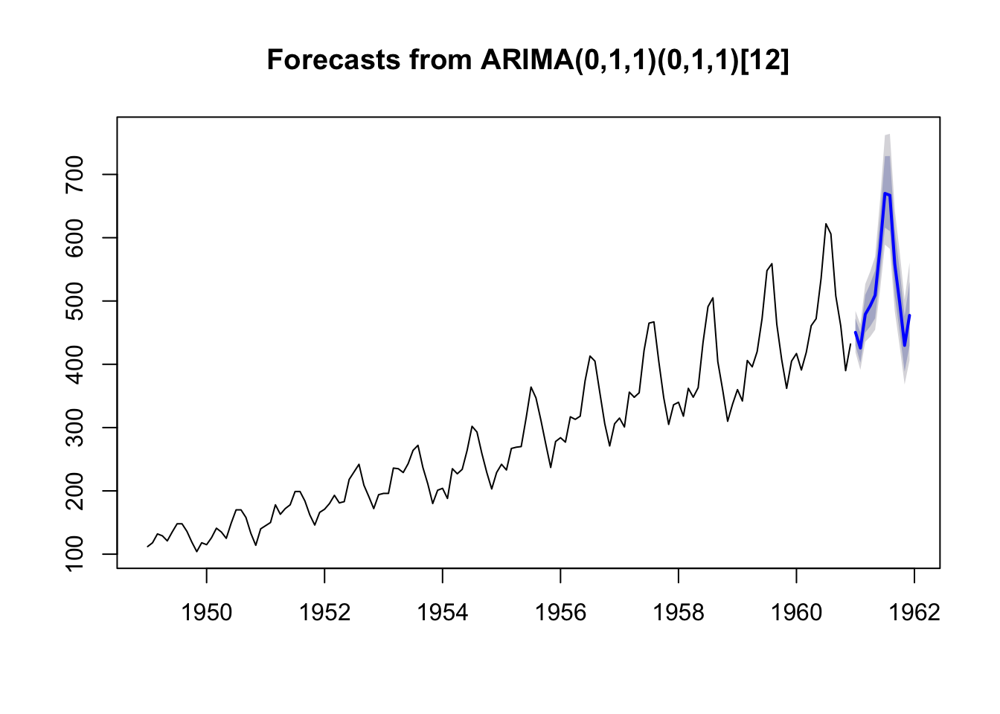